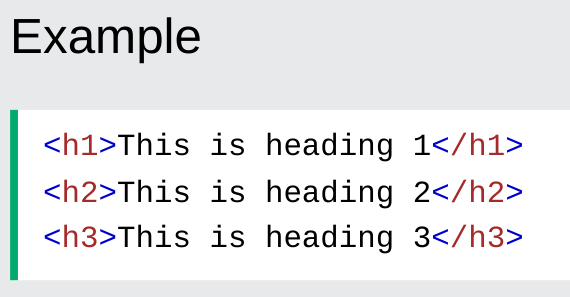
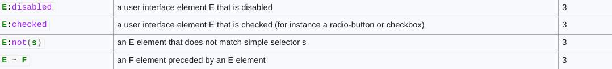

Html
1. About:
The HyperText Markup Language or HTML is the standard markup language for documents designed to be displayed in a web browser. It can be assisted by technologies such as Cascading Style Sheets (CSS) and scripting languages such as JavaScript. Web browsers receive HTML documents from a web server or from local storage and render the documents into multimedia web pages. HTML describes the structure of a web page semantically and originally included cues for the appearance of the document.
2. History:
The first version of HTML was written by Tim Berners-Lee in 1993. Since then, there have been many different versions of HTML. The most widely used version throughout the 2000's was HTML 4.01, which became an official standard in December 1999.
3. Introduction to the language:
- HTML stands for Hyper Text Markup Language.
- HTML is the standard markup language for creating Web pages.
- HTML describes the structure of a Web page.
- HTML consists of a series of elements.
- HTML elements tell the browser how to display the content.
- HTML elements label pieces of content such as "this is a heading", "this is a paragraph", "this is a link", etc.
A Simple HTML Document:
Example Explained:
- The '< !DOCTYPE html >' declaration defines that this document is an HTML5 document.
- The '< html >' element is the root element of an HTML page.
- The '< head >' element contains meta information about the HTML page
- The '< title >' element specifies a title for the HTML page (which is shown in the browser's title bar or in the page's tab).
- The '< body >' element defines the document's body, and is a container for all the visible contents, such as headings, paragraphs, images, hyperlinks, tables, lists, etc.
- The '< h1 >' element defines a large heading.
- The '< p >' element defines a paragraph.
What is an HTML Element?
An HTML element is defined by a start tag, some content, and an end tag:
'< tagname >' Content goes here... '< /tagname >'.
The HTML element is everything from the start tag to the end tag:
'< h1 >' My First Heading '< /h1 >'
'< p >'My first paragraph. '< /p >'
Web Browsers:
The purpose of a web browser (Chrome, Edge, Firefox, Safari) is to read HTML documents and display them correctly.
A browser does not display the HTML tags, but uses them to determine how to display the document:

HTML Page Structure:
Below is a visualization of an HTML page structure:
4. Html Basics:
HTML Documents:
All HTML documents must start with a document type declaration: '< !DOCTYPE html >'.
The HTML document itself begins with '< html >' and ends with '< /html >'.
The visible part of the HTML document is between '< body >' and '< /body >''.
The Declaration:
The '< !DOCTYPE >' declaration represents the document type, and helps browsers to display web pages correctly.
It must only appear once, at the top of the page (before any HTML tags).
The declaration is not case sensitive.
HTML Headings:
HTML headings are defined with the '< h1 >' to '< h6 >'' tags.
'< h1 >' defines the most important heading. '< h6 >' defines the least important heading:

HTML Paragraphs:
HTML paragraphs are defined with the '< p >' tag:
HTML Links:
HTML links are defined with the '< a >' tag:
The link's destination is specified in the href attribute.
Attributes are used to provide additional information about HTML elements.
HTML Images:
HTML images are defined with the '< img >'' tag.
The source file (src), alternative text (alt), width, and height are provided as attributes:
How to View HTML Source?
View HTML Source Code:
Right-click in an HTML page and select "View Page Source" (in Chrome) or "View Source" (in Edge), or similar in other browsers. This will open a window containing the HTML source code of the page.
Inspect an HTML Element:
Right-click on an element (or a blank area), and choose "Inspect" or "Inspect Element" to see what elements are made up of (you will see both the HTML and the CSS). You can also edit the HTML or CSS on-the-fly in the Elements or Styles panel that opens.
CSS
1. About:
Cascading Style Sheets is a style sheet language used for describing the presentation of a document written in a markup language such as HTML. CSS is a cornerstone technology of the World Wide Web, alongside HTML and JavaScript.
CSS is designed to enable the separation of presentation and content, including layout, colors, and fonts. This separation can improve content accessibility; provide more flexibility and control in the specification of presentation characteristics; enable multiple web pages to share formatting by specifying the relevant CSS in a separate .css file, which reduces complexity and repetition in the structural content; and enable the .css file to be cached to improve the page load speed between the pages that share the file and its formatting.
2. History:
CSS was first proposed by Håkon Wium Lie on 10 October 1994. At the time, Lie was working with Tim Berners-Lee at CERN. Several other style sheet languages for the web were proposed around the same time, and discussions on public mailing lists and inside World Wide Web Consortium resulted in the first W3C CSS Recommendation (CSS1) being released in 1996. In particular, a proposal by Bert Bos was influential; he became co-author of CSS1, and is regarded as co-creator of CSS.
Style sheets have existed in one form or another since the beginnings of Standard Generalized Markup Language (SGML) in the 1980s, and CSS was developed to provide style sheets for the web. One requirement for a web style sheet language was for style sheets to come from different sources on the web. Therefore, existing style sheet languages like DSSSL and FOSI were not suitable. CSS, on the other hand, let a document's style be influenced by multiple style sheets by way of "cascading" styles.
As HTML grew, it came to encompass a wider variety of stylistic capabilities to meet the demands of web developers. This evolution gave the designer more control over site appearance, at the cost of more complex HTML. Variations in web browser implementations, such as ViolaWWW and WorldWideWeb, made consistent site appearance difficult, and users had less control over how web content was displayed. The browser/editor developed by Tim Berners-Lee had style sheets that were hard-coded into the program. The style sheets could therefore not be linked to documents on the web. Robert Cailliau, also of CERN, wanted to separate the structure from the presentation so that different style sheets could describe different presentation for printing, screen-based presentations, and editors.
3. Introduction to the language:
Syntax:
CSS has a simple syntax and uses a number of English keywords to specify the names of various style properties.
A style sheet consists of a list of rules. Each rule or rule-set consists of one or more selectors, and a declaration block.
Selector:
In CSS, selectors declare which part of the markup a style applies to by matching tags and attributes in the markup itself.
Selectors may apply to the following:
- all elements of a specific type, e.g. the second-level headers h2
- elements specified by attribute, in particular:
- id: an identifier unique within the document, identified with a hash prefix e.g. #id
- class: an identifier that can annotate multiple elements in a document, identified with a period prefix e.g. .classname
- elements depending on how they are placed relative to others in the document tree.
Classes and IDs are case-sensitive, start with letters, and can include alphanumeric characters, hyphens, and underscores. A class may apply to any number of instances of any elements. An ID may only be applied to a single element.
Pseudo-classes are used in CSS selectors to permit formatting based on information that is not contained in the document tree. One example of a widely used pseudo-class is :hover, which identifies content only when the user "points to" the visible element, usually by holding the mouse cursor over it. It is appended to a selector as in a:hover or #elementid:hover. A pseudo-class classifies document elements, such as :link or :visited, whereas a pseudo-element makes a selection that may consist of partial elements, such as ::first-line or ::first-letter.
Selectors may be combined in many ways to achieve great specificity and flexibility. Multiple selectors may be joined in a spaced list to specify elements by location, element type, id, class, or any combination thereof. The order of the selectors is important. For example, div .myClass {color: red;} applies to all elements of class myClass that are inside div elements, whereas .myClass div {color: red;} applies to all div elements that are inside elements of class myClass. This is not to be confused with concatenated identifiers such as div.myClass {color: red;} which applies to div elements of class myClass.
The following table provides a summary of selector syntax indicating usage and the version of CSS that introduced it.

4. CSS Basics:
Declaration block:
A declaration block consists of a list of declarations in braces. Each declaration itself consists of a property, a colon (:), and a value. If there are multiple declarations in a block, a semi-colon (;) must be inserted to separate each declaration. An optional semi-colon after the last (or single) declaration may be used.
Properties are specified in the CSS standard. Each property has a set of possible values. Some properties can affect any type of element, and others apply only to particular groups of elements.
Values may be keywords, such as "center" or "inherit", or numerical values, such as 200px (200 pixels), 50vw (50 percent of the viewport width) or 80% (80 percent of the parent element's width). Color values can be specified with keywords (e.g. "red"), hexadecimal values (e.g. #FF0000, also abbreviated as #F00), RGB values on a 0 to 255 scale (e.g. rgb(255, 0, 0)), RGBA values that specify both color and alpha transparency (e.g. rgba(255, 0, 0, 0.8)), or HSL or HSLA values (e.g. hsl(000, 100%, 50%), hsla(000, 100%, 50%, 80%)).
Length units:
Non-zero numeric values representing linear measures must include a length unit, which is either an alphabetic code or abbreviation, as in 200px or 50vw; or a percentage sign, as in 80%. Some units – cm (centimetre); in (inch); mm (millimetre); pc (pica); and pt (point) – are absolute, which means that the rendered dimension does not depend upon the structure of the page; others – em (em); ex (ex) and px (pixel) – are relative, which means that factors such as the font size of a parent element can affect the rendered measurement. These eight units were a feature of CSS 1 and retained in all subsequent revisions. The proposed CSS Values and Units Module Level 3 will, if adopted as a W3C Recommendation, provide seven further length units: ch; Q; rem; vh; vmax; vmin; and vw.
Use:
Before CSS, nearly all presentational attributes of HTML documents were contained within the HTML markup. All font colors, background styles, element alignments, borders and sizes had to be explicitly described, often repeatedly, within the HTML. CSS lets authors move much of that information to another file, the style sheet, resulting in considerably simpler HTML.
For example, headings (h1 elements), sub-headings (h2), sub-sub-headings (h3), etc., are defined structurally using HTML. In print and on the screen, choice of font, size, color and emphasis for these elements is presentational.
Before CSS, document authors who wanted to assign such typographic characteristics to, say, all h2 headings had to repeat HTML presentational markup for each occurrence of that heading type. This made documents more complex, larger, and more error-prone and difficult to maintain. CSS allows the separation of presentation from structure. CSS can define color, font, text alignment, size, borders, spacing, layout and many other typographic characteristics, and can do so independently for on-screen and printed views. CSS also defines non-visual styles, such as reading speed and emphasis for aural text readers. The W3C has now deprecated the use of all presentational HTML markup.
For example, under pre-CSS HTML, a heading element defined with red text would be written as:
Using CSS, the same element can be coded using style properties instead of HTML presentational attributes:
The advantages of this may not be immediately clear but the power of CSS becomes more apparent when the style properties are placed in an internal style element or, even better, an external CSS file. For example, suppose the document contains the style element:
All h1 elements in the document will then automatically become red without requiring any explicit code. If the author later wanted to make h1 elements blue instead, this could be done by changing the style element to:
Rather than by laboriously going through the document and changing the color for each individual h1 element.
The styles can also be placed in an external CSS file, as described below, and loaded using syntax similar to:
This further decouples the styling from the HTML document and makes it possible to restyle multiple documents by simply editing a shared external CSS file.